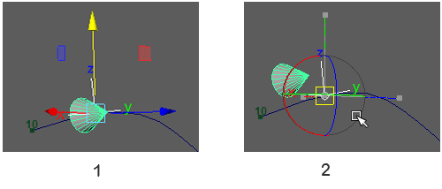

每个对象的枢轴点始终遵循运动路径。通过更改对象与其枢轴点的偏移距离和方向，可以控制对象相对于运动路径的位置。您可以在将对象附加到路径之前或之后调整偏移。
偏移对象
- 选择对象。
- 从“工具箱”(Tool Box)中选择“移动工具”(Move Tool)。
变换轴将显示在对象上，如图 1 中所示。

- 按 Insert (Windows) 键或 Home (Mac OS X) 键。
中心点将显示在对象的枢轴点处。
- 单击枢轴点的中心，保持按住鼠标左键，然后四处移动鼠标。
对象将沿鼠标移动的相反方向移动，但枢轴点的位置不变，如图 2 中所示。
提示： 在“四个视图”(Four View)面板布局中，您可能会获得更清晰的对象定位视图。
- 相对于枢轴点对齐对象。请记住，枢轴点始终遵循运动路径。
- 运行动画以检查对象位置，并准备根据需要加以调整。